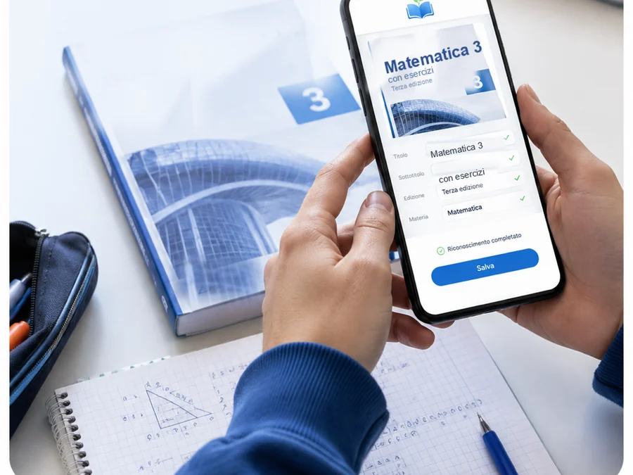
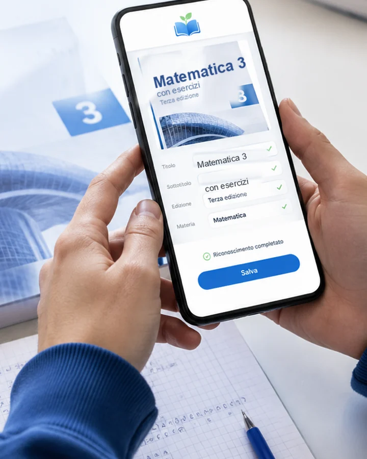
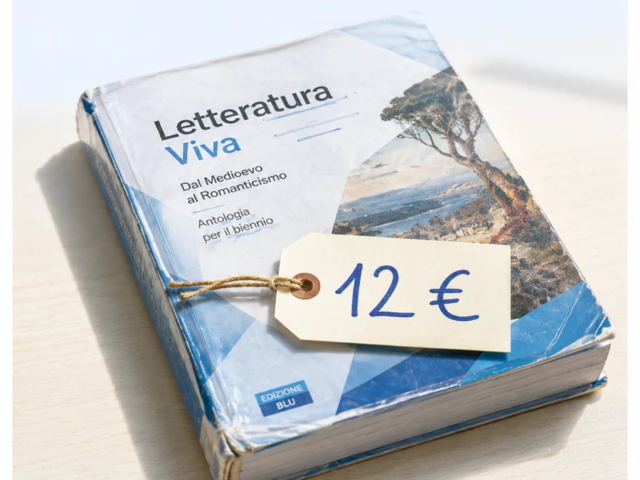
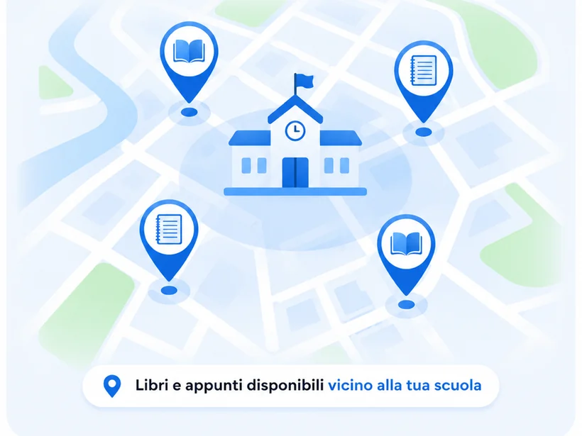
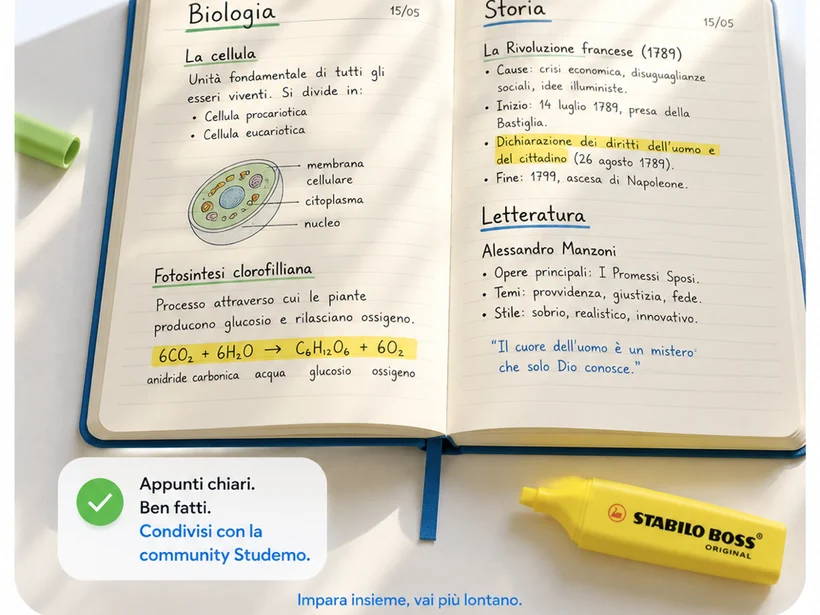
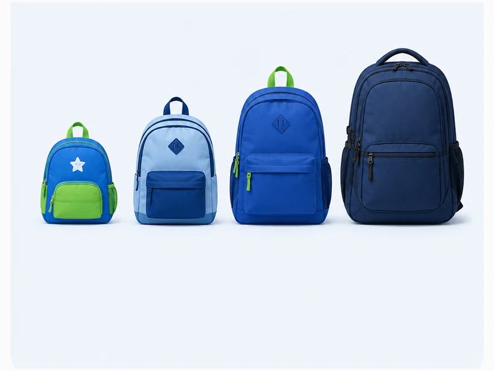
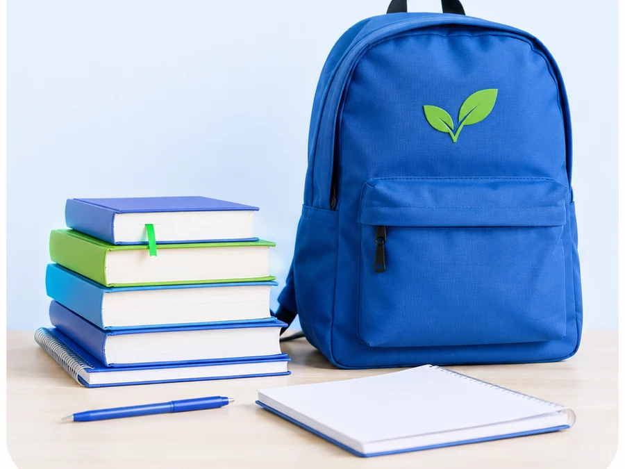

1
Scatta la copertina
Titolo, autore, materia e ISBN li legge l'app. Se preferisci, inquadri il codice a barre e finisce lì.
Pubblichi in un minuto i libri e gli appunti che hai finito, e trovi quelli che ti servono: vicino a te, tra studenti come te. Gratis, dalle elementari alla laurea — si risparmia a settembre e ogni libro fa un altro giro.


Tu scatti la foto: titolo, autore e materia si compilano da soli.

Titolo, autore, materia e ISBN li legge l'app. Se preferisci, inquadri il codice a barre e finisce lì.

Decidi tu quanto chiedere — oppure lo regali, e qualcuno ti ringrazia.
Chi è interessato ti scrive dentro Studemo o su WhatsApp. Vi trovate a scuola o in centro.
Un minuto in tutto. E a settembre il tuo libro dell'anno scorso serve a qualcuno della tua scuola.
Guarda il marchio: la freccia blu è il tuo libro che parte, la verde è quello che ti torna indietro. È il giro che tiene in piedi Studemo — quello che tu hai finito, per qualcun altro comincia adesso. E il germoglio in mezzo dice il resto: ogni libro che gira fa bene due volte, alla tua famiglia e al pianeta.
Un corredo di libri nuovi alle superiori supera facilmente i 300 euro. Un libro usato tiene dentro le stesse pagine e chiede molto meno: sul totale dell'anno restano in tasca decine di euro, a casa tua.
Tanto pesa un libro di testo. Ogni volta che passa di mano invece di essere ristampato, quella carta — con l'acqua e l'energia che servono a farla — resta dov'è. Un armadio pieno di libri fermi vale una piccola foresta.
Un manuale tenuto bene serve a uno studente dopo l'altro: cambia zaino ogni settembre e ricomincia. Il giro parte dal tuo scaffale, oggi.
Ogni cosa che vedi qui nasce da come studi davvero, ogni giorno.

Prima gli annunci della tua zona e della tua scuola: ci si trova in cinque minuti, si guarda il libro e si chiude lì.
Scambia, risparmia, studia meglio: il libro passa di mano davanti a scuola, e il prezzo lo decidete voi.
Ogni scambio lascia una valutazione a stelle. Chi tratta bene si riconosce subito, e da quella persona ci torni volentieri.

Le tue pagine chiare e ordinate valgono quanto un libro. Condividile: aiuti qualcuno e ti fai aiutare.

Il sussidiario di terza, l'antologia del liceo, il manuale di anatomia: Studemo copre tutta la scuola italiana. Scegli il tuo istituto e l'indirizzo, e trovi le materie che studi davvero quest'anno.
La tua tranquillità viene prima di tutto.
Contenuti veri e scolastici, rispetto per gli altri: sono poche regole, valgono per tutti e qui dentro si sta bene.
Su ogni annuncio e ogni profilo. Le segnalazioni le guardiamo entro 24 ore.
Puoi tenerlo nascosto: si apre solo quando tocchi tu “Contatta su WhatsApp”.
Entri col nome che scegli, anche di fantasia. Email e password restano fuori.
Fotografa il primo libro che hai finito: in un minuto è online, e a settembre serve a qualcuno della tua scuola.
In arrivo su App Store e Google Play. Intanto la prova è aperta: scrivi e ti mandiamo l'accesso.

Quelle che fanno tutti, con risposte corte.
È gratis. Pubblichi, cerchi e scrivi quanto vuoi, e resta gratis.
Basta aprirla: sfogli subito. Nome e numero servono soltanto quando pubblichi o scrivi a qualcuno.
Fra voi, di persona, come preferite. Studemo vi fa incontrare e il denaro resta tutto nelle vostre mani.
Vi date appuntamento a scuola o in centro, e lì il libro passa di mano: veloce, vicino, e il prezzo resta quello che avete detto.
Sì. Studemo copre tutta la scuola, dalla prima elementare all'ultimo anno di università.
Si pubblicano come i libri: una foto, il titolo, la materia. E chi li cerca ti scrive.
Dipende dai libri, ma un usato in buone condizioni costa in genere circa la metà del nuovo: su un corredo intero sono decine di euro l'anno. E ogni libro che rimetti in giro è carta che non serve ristampare.
Un progetto italiano, indipendente, nato a Brescia. Si parte dalle scuole della provincia.